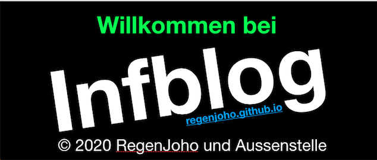

Endliche Automaten - 06.08.2020
Auflisten von Wörtern in Baumdiagrammen - 17.09.2020
Auflisten von Wörtern in Baumdiagrammen Teil 2 - 24.09.2020 - Beta
Einstieg in Python - 05.11.2020
Da wir den Code selber in HTML geschrieben haben, waren wir langsamer bei der bearbeitung der Aufgaben.
Der Code war manchmal sehr lang und ist hier einzusehen.
© 2020 by (RegenJoho) und Aussenstelle